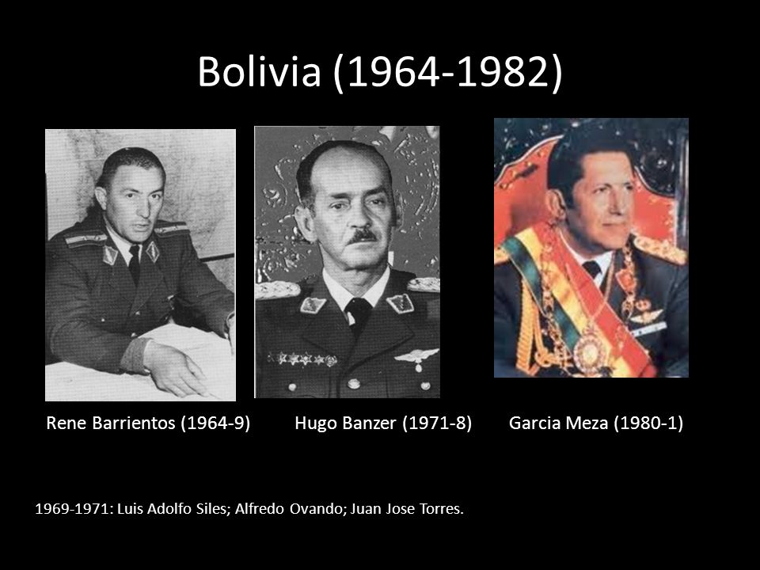

Categories: Dictatorship; coup; Operation Condor; reparation law; truth commission; indigenous peoples.
Actors: Bolivian armed forces, headed by different generals; political parties; workers' political organisations; peasants' organisations; Bolivian indigenous peoples, civil organisations.
1964 : A military junta led by general René Barrientos overthrew Víctor Paz Estenssoro and took control of the government.
1967 : Masacre de San Juan. In June, during the celebration of the night of San Juan, military troops invaded the mining camps of Catavi, killing workers and their families.
1969-1970 : After the death of Barrientos, general Alfredo Ovando took over the government, followed by general Juan José Torres.
1974 : Masacre del Valle. The government sends in the army to repress peasant protests in Cochabamba. Groups of peasants are murdered in different places in the region.
1975 : Moema Viezzer published Si me permiten hablar, a testimony by Domitila Barrios de Chungara, a miner, political leader, and survivor of the San Juan massacre.
1978 : After Banzer's departure, a series of calls for elections and military coups occurred in the following years.
1979 : Masacre de Todos Santos. At the beginning of November, Colonel Alberto Natusch leads a coup d'état. Numerous protests follow, which are violently suppressed by the army.
1980 : The priest Luis Espinal, who had actively denounced the repression and corruption of the government forces,is tortured and murdered by them. 1980 : In July, General Luis García Meza and Colonel Luis Arce stage a coup d'état. Violent repression is unleashed against the population. Political leaders Marcelo Quiroga and Carlos Flores were murdered, and their bodies disappeared. Quiroga had promoted a trial to bring Banzer to justice.
1982 : The military junta stepped down. Congress appointed Hernán Siles Suazo, the candidate elected in 1980, as president.
Memory initiatives Decretos Supremos 19.241 (1982) y 19.734 (1983): Acts establishing the creation and continuity of the Comisión de Investigación de Ciudadanos Desaparecidos Forzados. Ley 2.640 de resarcimiento excepcional a víctimas de violencia política en periodos de gobiernos Inconstitucionales (2004): a law establishing a reparation mechanism for victims of political violence between 1964 and 1982. To date, 1,714 cases have been recognised as beneficiaries and around 4,500 more are under consideration. Informe de la Comisión de la Verdad (2021): a report comprising 11 volumes of documentation as a result of the investigations carried out by the commission. Memory sites Espacio de la Memoria Histórica de las Luchas del Pueblo Boliviano: a place of remembrance where public events are held, located on Laikakota Hill in La Paz. There is also a statue of Marcelo Quiroga in the same place.
Organisations Asamblea permanente de Derechos Humanos de Bolivia: an organisation ffounded in 1976 to defend and promote human rights. Asociación de familiares de detenidos desaparecidos y mártires por la liberación nacional (ASOFAMD): an organisation formed by relatives of victims of human rights violations during the dictatorships. Comisión Nacional de Investigación de Desaparecidos Forzados de Bolivia: an official body set up in 1982 to investigate human rights abuses, which was disbanded before it could complete its work. Comisión de la Verdad: official body created in 2017 to investigate human rights violations during the dictatorships. Plataforma de luchadores sociales y sobrevivientes de las dictaduras: an umbrella organisation that set up a tent in front of the Ministry of Justice in 2012 to demand reparations for victims. Its leader, Julio Llanos, died in 2019 after being attacked. Issues specific to the country Bolivia was one of the first Latin American countries to set up a commission to investigate cases of violence, but it was never able to complete its work. It would take more than three decades for the next commission to carry out similar work.